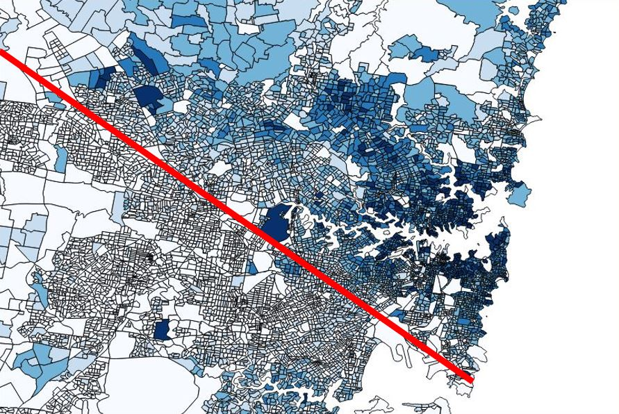
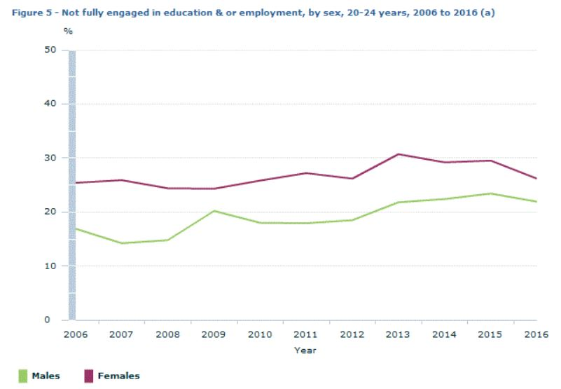
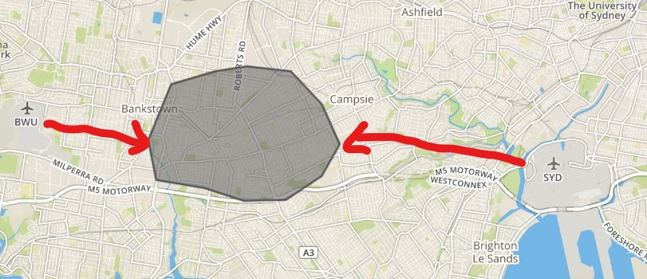
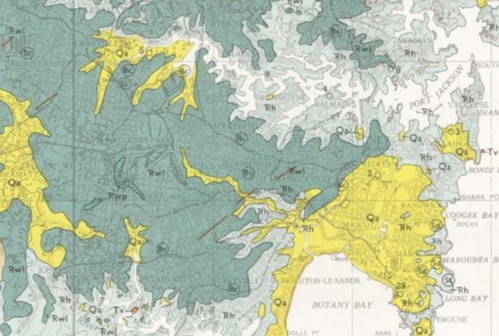
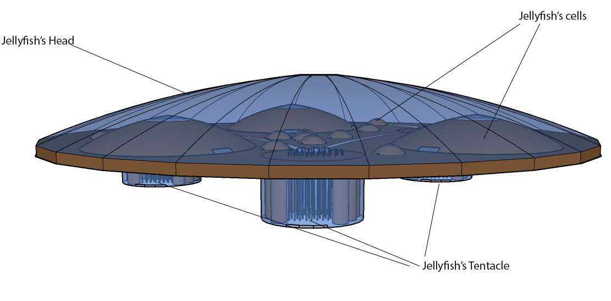
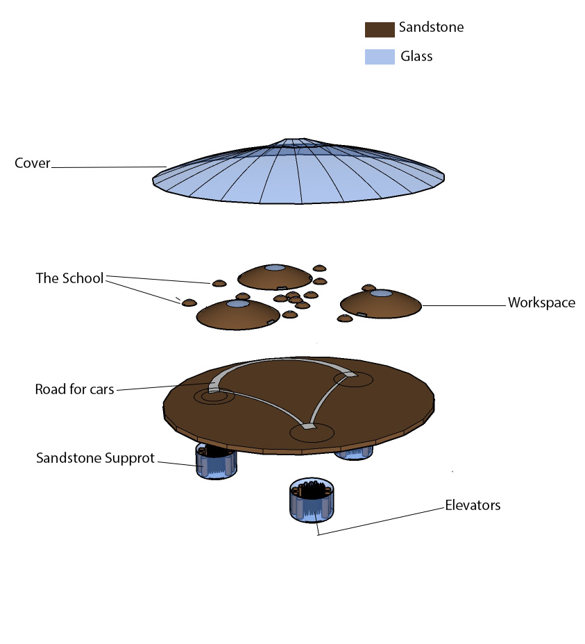

Problem analysis:
By analyzing the data from assignment 2, I found that most of the rich people in Sydney gathering above the latte line, which makes the people lives below the latte line disadvantage, so this will be the main problem I am trying to solve. Therefore, I am trying to find a solution to increase the number of rich people below the latte line. Moreover, there is a pay gap between male and female, male earns more than female, so I hope the solution I come up with for the main problem can also solve this problem. The latte line below clearly showing the main problem.

Solution:
By combining the data of education from Australian Bureau of Statistics and the most famous universities’ location in Sydney from google map, I think that a new community where combining the university and workspace could be the way to solve the main problem.
The graph on the left shows the rate of male and female who has not fully engaged in education and/or employment between 2006 and 2016. It is clearly showing that more female has not engage in education and/or employment than male. While the graph on the right shows the famous universities's location, like UNSW and USYD, are located around CBD.


Therefore, I am considering building a new space where contains both universities with the best education resource and working place somewhere below the latte line, so the place around the school could become another CBD which gives more opportunities for the people around that area.
Location Selection:
The location I selected is between Bankstown and Campsie, because there are two airports near the location, so it has a good transportation condition for the people live here, and most importantly, it is convenience for people living far from Sydney coming to this place to work and study. Moreover, the main rock type around this area is sedimentary rock, like sandstone and shale, so it should be strong enough to hold large buildings. The graph on the left shows the airport location, while the right one shows the rock types.
 
Proposal Details:
The idea of architecture form of the community based on jellyfish, which means the legs of jellyfish are used as the supports and head is for the community construction. The reason is that Sydney is near the sea, and there are lots of jellyfish found on the beach, so the form of architecture can fit into the environment. Moreover, the construction material of the building are mainly sandstone and glass, in order to suit the environment further.
The community is lifted above the ground, so it will not use too much land on the ground, and the plan of the community is to put the school in the centre and people can work around the school. Which means, students have a chance to find a job immediately after graduating, and for those are working can come back to school to learn more if they want. This arrangement is just like the Sydney CBD where universities just in or around the CBD, and students can find jobs in CBD after they graduating. Therefore, the main problem can be solved.
Moreover, the school is for university students, and also it is free for those who cannot pay the tuition fee, so everyone has same opportunity to access higher education. In addition, the salary of the people working here are all the same in order to reduce the pay gap between male and female.
Below are some graphs showing the idealised community.


The School is made of 13 small "cells" which represents 8 faculties, 1 postgraduate, 1 doctor’s degree, 1 administration, 1 extra lab and extra lecture rooms. Another 3 bigger “cells” are the working space. There are some other area where are not be used as either school or working space can utilized for entertainment area or even building a shopping mall for people to relax.
The community is 200 meters above the ground to make sure it will not hit any buildings in that area. All people and other stuff, like cars, will go up to the community by using elevators.

The video below gives a quick overview of the idealised community: